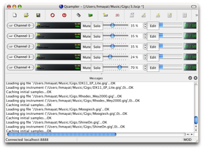
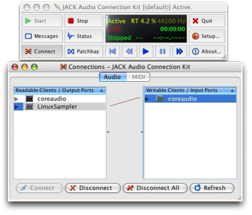
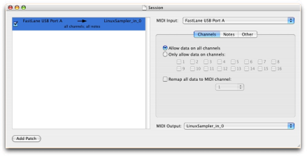

LinuxSampler for Mac OS X HOWTO by Toshi Nagata
January 6th, 2008
1. Introduction
The LinuxSampler development team is happy to announce the release of
a new version of LinuxSampler of Mac OS X. More information will be added here soon, so check back frequently.
For now the sampler supports the CoreMIDI interface
for MIDI input and jack for audio out. This means it currently runs only
as a standalone application. An AU/VST interface will follow at a later stage, along with
a network module to run multiple sampler slaves distributed on OS/X, Windows or
Linux machines (Linux provides better performance) all controlled from a
OS X or Windows box i.e. running the AU / VST sequencer.
Even though LinuxSampler presently runs only as standalone app,
thanks to jack you can comfortably route the sampler's audio outs back into your sequencer.
LinuxSampler is implemented as a client/server application. This means
the sampling engine (the server / backend) runs
independently from the GUI (the client / frontend). Sampling engine and
client can be run on the same box or on different machines too, connected
over the network.
The Mac OS X version provides all the features of the Linux version
since it is built from the same source code base.
This means when new features will come out the
Mac OS X version will usually provide the same feature set as the Linux
version. This was made possible by the very modular design of both
low level, operating system functions and flexible audio / MIDI driver
system.
The Mac OS X version comes as an easy to install DMG file which will
install all the necessary modules to run both the server ( linuxsampler.exe )
and the GUI client. For now it installs only the qsampler GUI client
as JSampler, the sampler frontend written in Java requires Java 1.6 which is not
available on OS X yet. Of course you can run JSampler on a Windows or Linux box
connected over the network to your OS X box or you could try to run it in a windows
virtual machine. We discourage running a virtual machine along with the sampler
as both applicationes are very CPU and RAM hungry therefore the performance
of LinuxSampler will be suboptimal.

2. Requirements
- PPC or Intel Mac (an Intel Mac should provide much better performance)
- Mac OS Tiger or later (Leopard should work too)
- JackOSX. Install it before LinuxSampler
3.a Installation
- Install JackOSX
(if you don't have it already).
- Download the latest version of the LinuxSampler Mac OS X installer
from the LinuxSampler
Download Page, and mount it on Finder.
- You will find a single folder "linuxsampler051-mac-20080102". Copy this
folder to wherever you like (e.g. under /Applications).
4. Using the Applications
The folder contains three items, "bin", "linuxsampler" and
"qsampler".
- Start qsampler.app. The application launches, and you
will see messages saying that linuxsampler is now running. After a
while, you will also see that the JackPilot application (installed by
the JackOSX installer) automatically launches showing the Jack server
already running.
-
Since CoreMIDI is sometimes too slow to respond when creating a new MIDI device.
so you need to increase "Timeout" parameter in the
Options:Server Settings to, 10000 msec.
4.1 Setting up MIDI Input
In qsampler click on the device configuration tab.
Click on the MIDI devices icon and then on Create.
You can create an arbitrary number of MIDI input devices by repeating
the procedure above.
Each MIDI device can be routed to arbitrary sampler channels.
4.2 Setting up Audio Output
LinuxSampler currently only supports the jack driver model for audio output
on Mac OS X.
Click on AUDIO devices icon and then on Create.
You can of course save and load sampler session as LSCP files which will
automaticall set up audio and midi devices and load samples into the channel strips.
-
Connect audio ports:
In the "Connections Manager" pane of JackPilot: linuxsampler --> Built-in audio: in1 & in2
or
In the "Connections" window of qjackctl: linuxsampler --> coreaudio

-
Start MIDI Patchbay.app and connect your MIDI Input instance (probably your MIDI interface or USB-enabled keyboard) to the "LinuxSampler_in_0"
MIDI Output

4.3 Loading Samples
Click on Add Channel. A dialog will appear.
Select the GIG file you want to load, the instrument within the GIG file,
Audio device, MIDI device, MIDI port and channel.
Click OK.
5. Installation Troubleshooting
TODO
6. Detailed Documentation
You find more detailed documentation about our software on our official
LinuxSampler documentation site.
7. Bugs, Problems and Feature Requests
There could be several bugs in the Mac OS X version of LinuxSampler which we hope to root out soon.
Please report them using our bug tracking system:
http://bugs.linuxsampler.org/
Some bugs and problems we discovered so far:
- The current LinuxSampler for Mac OS X binary distribution does not ship with gigedit yet
Toshi writes: I tried gigedit with X11 and gtk on my Mac. It worked, but the
installation process was too much complicated for ordinary users (so
complicated that I cannot remember exactly how I did that myself). We
still have a long way before gigedit can be part of binary distribution
for Mac.
- if you overload the sampler (CPU overload or disk overload) it
produces noises
-
QSampler crashes when one tries to create a second port of jack.
An error dialog saying the device was not created, after the dialog is dismissed the QSampler crashes.
-
Another problem in QSampler. It sometimes fails to quit
gracefully, and I need to do "Force Quit". After force quitting, the
linuxsampler subprocess is still running and I need to stop it by
"killall linuxsampler".
8. Credits
Thanks to Stephane Letz (Initial OS X port) and Ebrahim Mayat (OSX Howto fixes, testing, screenshots)
9. Contact
If you have questions or want to help us to improve the sampler,
subscribe to the
LinuxSampler Developer's mailing list.
That's it, enjoy!
{kind=link}
{kind=link}